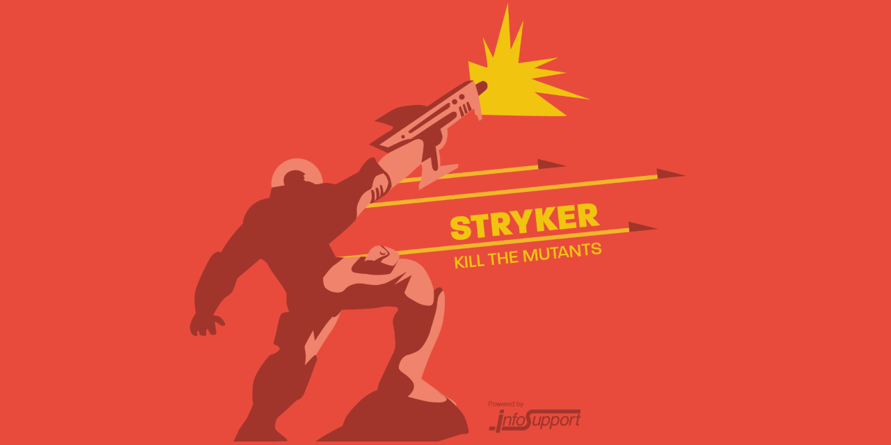

Read online →
Welcome back. Reddit engineers just proved you can migrate critical infrastructure without downtime using "tap-compare" testing. Meanwhile, Scala 3.8 forces a hard choice: upgrade to JDK 17 or stay on legacy LTS. And Microsoft claims AI will rewrite their entire codebase by 2030—engineers are skeptical.
Also: Robinhood cut Kafka costs 80% by going diskless, and the debate over MCP vs direct APIs splits the agent tooling world.
- Reddit's tap-compare strategy makes language migrations safe
- Scala 3.8 JDK requirement fractures the ecosystem
- Microsoft's AI rewrite goals vs engineering reality
- Stryker4s adds Unix sockets for faster mutation testing
WarpStream's S3-backed Kafka (now Confluent) promises 80% cost reduction by eliminating brokers. Robinhood runs 10+ TB/day of logs through it. The debate rages: is this the future of streaming or a regression for latency-sensitive workloads?
Object storage removes inter-AZ networking fees and broker management. Robinhood pays only for actual usage, not provisioned capacity. WarpStream achieves sub-1s producer latency—acceptable for logs and analytics. Stateless agents auto-scale without rebalancing partitions. For the 80% of workloads that tolerate seconds of latency, the economics are compelling.
S3 adds 100-500ms to read paths. Transactional event streaming requiring sub-50ms p99 latency cannot tolerate this. Teams must split workloads: diskless for logs, traditional Kafka for transactions. Operational complexity increases—you now manage two streaming systems. Vendor lock-in concerns persist with proprietary control planes.
The debate creates a false binary. Most teams don't need uniform latency across all workloads. We see successful architectures routing logs to WarpStream (cost-optimized) and transactions to Redpanda or MSK (latency-optimized). The real risk is delayed migration—teams waiting for "one solution" miss immediate cost savings. Start with the 80% low-latency workload. Match architecture to latency budget, not marketing.
Reddit migrated their comment backend from Python to Go. Comments handle the highest write throughput of any core model. One mistake corrupts data for 50M+ daily users.
Standard shadow traffic doesn't work for writes. Comment IDs must be unique—you cannot double-write to production. Early attempts caused serialization mismatches: Go wrote data Python couldn't deserialize. Database pressure spiked because Go wrote directly while Python used an ORM with hidden optimizations.
Reddit deployed "sister datastores"—isolated mirrors of PostgreSQL, Memcached, and Redis. The flow: route write to Go microservice → Go calls Python to perform actual production write (user sees result) → Go writes to isolated sister datastores → Compare production vs sister data across all three stores → Log discrepancies, fix, repeat. This created 18 validation paths (3 endpoints × 3 datastores × 2 implementations) with zero risk to production data.
Language migrations require validation infrastructure, not just feature parity. Reddit spent 40% of the migration timeline on discrepancy detection. Serialization is the hidden killer—different languages make different defaults for byte ordering, null handling, numeric precision. Test round-trips before migrating a single byte of production data.
Starting with 3.8, Java 17 is the minimum. Scala 3.3 LTS continues supporting JDK 8, but new features require 17. Teams face forced JVM upgrades. The betterFors feature also stabilizes, changing for-comprehension desugaring.
Distinguished Engineer Galen Hunt announced plans to replace all C/C++ with Rust using AI-assisted refactoring. Claim: "1 engineer, 1 month, 1 million lines." Reality check: Hunt clarified this is research infrastructure, not immediate Windows rewrite.
Lightbend (now Akka) launched four new components: Orchestration (multi-agent workflows), Agents (MCP tool support), Memory (durable sharded state), Streaming (real-time AI processing). Included in existing licenses.

SIGNAL is published by Scalac. We build distributed systems for teams who ship.
Want deeper analysis? Explore our case studies at scalac.io/case-studies
Subscribe: Receive The Distributed Pulse monthly by signing up at scalac.io/newsletter